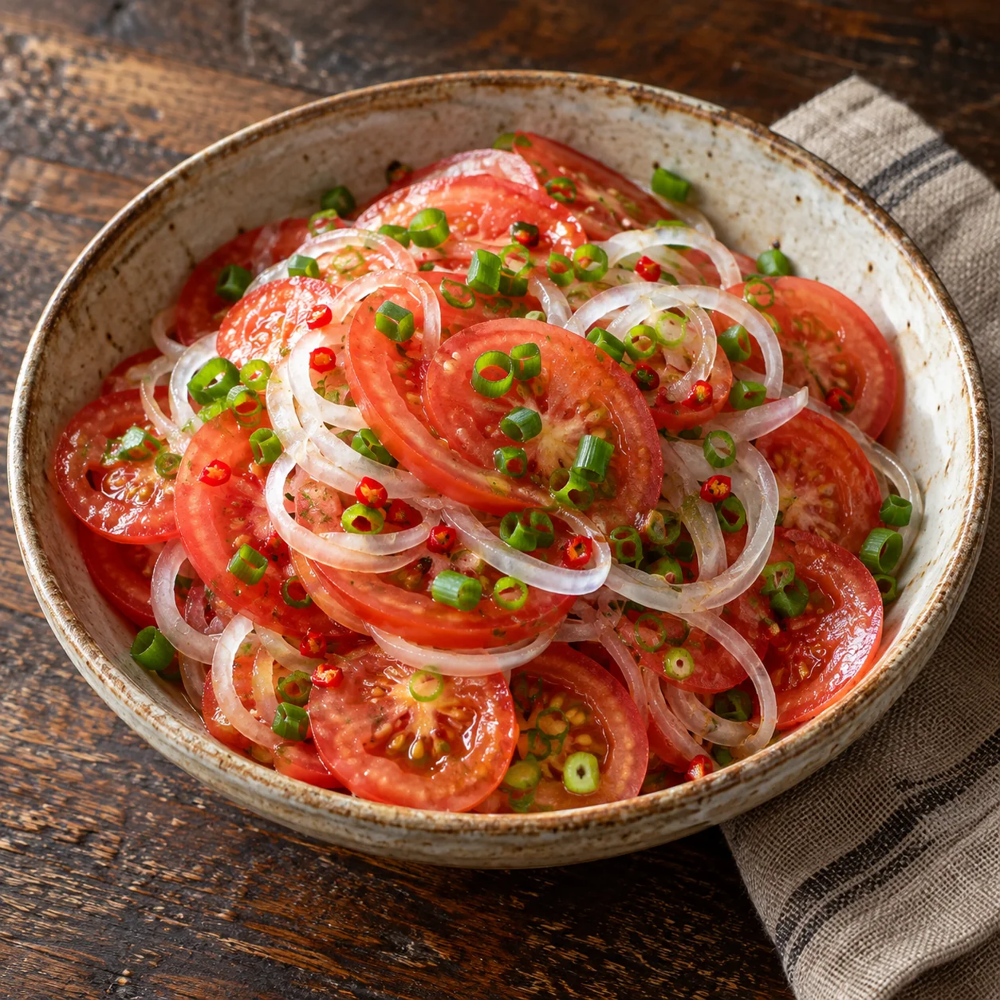

Was Kleines dazu · Salate
Tomatensalat zum Plov

Ein frischer, saftiger Tomatensalat, der den kräftigen Plov wunderbar ausgleicht. Er kommt ganz ohne schweres Dressing aus – gute Tomaten, Zwiebeln und etwas Salz reichen vollkommen.
Zutaten
600 greife, aromatische Tomaten
1 kleineZwiebel
2Frühlingszwiebeln
Optionaletwas milde rote Chili
½ TLSalz
Zubereitung
- Die Tomaten mit einem sehr scharfen Messer in möglichst dünne Scheiben schneiden. So geben sie genügend Saft ab und verbinden sich später mit den Zwiebeln.
- Die Zwiebel schälen, halbieren und in hauchdünne Halbringe schneiden. Den grünen Teil der Frühlingszwiebeln in feine Ringe schneiden.
- Für etwas Schärfe ein kleines Stück milde Chili sehr fein hacken. Wer den Plov mit ganzen Chilischoten zubereitet hat, kann stattdessen vorsichtig etwas von einer weich gegarten Chili verwenden.
- Tomaten, Zwiebeln, Frühlingszwiebeln und Chili in eine Schüssel geben, salzen und mit den Händen ganz locker vermischen. Dabei nicht drücken, damit die Tomatenscheiben nicht zerfallen.
- Den Salat 5 Minuten ziehen lassen und direkt frisch zum Plov servieren.